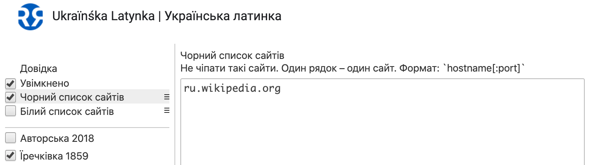
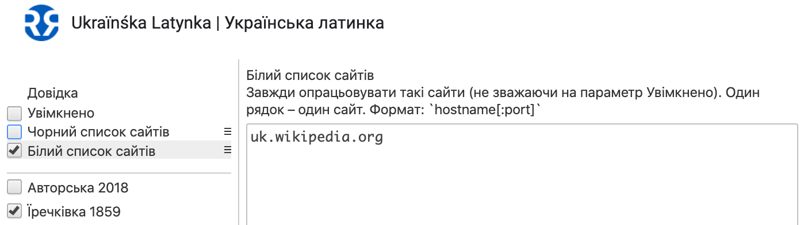

Ukraïnśka Latynka | Українська Латинка
Автоматична транслітерація тексту на веб-сторінках.
Обирайте систему латинизації у спливаючому вікні.
Більше проєктів латинизації є в налаштуваннях розширення. Позначте у списку ті,
що будуть доступні у спливаючому вікні.
Поділіться вподобаною системою латинизації у соцмережах. Поширюйте коротке посилання.
Або створіть власну систему латинизації. Просто почніть з редагування вподобаної
в налаштуваннях розширення.
Додайте в чорний список ті сайти, де транслітерацію буде вимкнено.

Чи просто вимкніть той сайт у спливаючому вікні.
Або ж користуйтеся білим списком сайтів, та вимкніть транслітерацію на всіх інших.

Використовуйте екран вводу для транслітерації тексту.